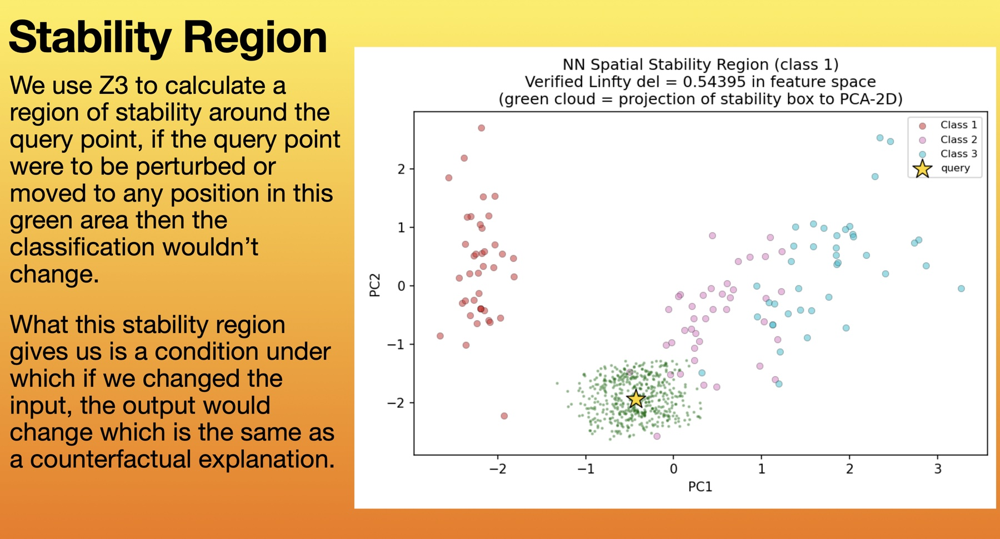
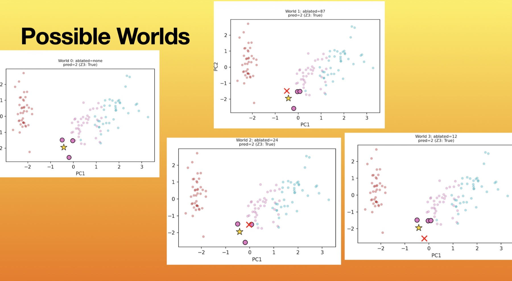

Explainable AI with Z3
Using the Z3 solver to compute verified stability regions around a classifier's predictions, giving counterfactual explanations of when its output would change.
Stability region
We use Z3 to calculate a region of stability around the query point: if the query point were perturbed or moved to any position in this region, the classification wouldn't change.
The stability region gives us the condition under which changing the input would change the output, which is the same as a counterfactual explanation.

Experiments
We ran three experiments: one with k-nearest neighbours (KNN), one with neural networks, and one with logistic regression.
Experiment 2: neural networks
We obtain the circuit through circuit discovery, then verify the classification model with Z3 by linearising the circuits.
We obtain the stability region and check robustness to perturbation within it: does the prediction change as we move around?
We were unable to find any actual causes, because flipping one neuron or one element of the neural network is not enough to produce a change in the final prediction.

Result
The final result: we can mathematically prove that a single neuron does not cause the final output given by the neural network.